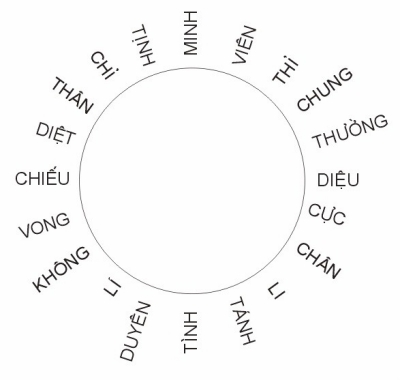

|
[05]
CHƯƠNG
THỨ NĂM
NGỘ TÁNH
LUẬN
Phàm là đạo, phải lấy sự tịch diệt làm
thể, còn tu lấy sự lìa tướng làm tông.
Nên kinh nói: Tịch diệt là Bồ đề.
Diệt hết hình tướng đó:
Là Phật, nghĩa là giác.
Người có giác tâm, được đạo Bồ đề, nên gọi là Phật.
Kinh nói: lìa tất cả mọi hình tướng tức gọi là chư Phật.
Nên biết tướng là có tướng mà không tướng, không thể thấy bằng mắt, chỉ
biết được bằng trí.
Ai nghe pháp ấy chợt phát lòng tin, là người ấy đang nương pháp đại thừa
siêu lên ba cõi.
*
Ba cõi ấy là tham, sân, si vậy.
Chuyển ngược tham, sân, si làm giới, định, huệ tức gọi siêu lên ba cõi.
Tuy nhiên, tham, sân, si chẳng có thực tính, chỉ bằng vào chúng sanh mà
đặt tên. Nếu có thể soi ngược trở lại thì sẽ thấy rõ:
Tánh của tham, sân, si tức là tánh Phật.
Ngoài tham, sân, si tuyệt nhiên không có tánh Phật nào khác.
Kinh nói: Từ vô thủy đến nay, chư Phật luôn luôn cư xử ở nơi ba độc, nuôi
lớn trong bạch pháp, mà thành tựu ở quả Thế tôn.
Ba độc ấy là tham, sân,si vậy.
Nói đại thừa tối thượng thừa là nói chổ sở
hành của hàng Bồ Tát.
Không gì là chẳng thừa, mà cũng không gì gọi được là thừa, suốt ngày thừa
mà chưa hề thừa, đó là Phật thừa.
Kinh nói: Lấy vô thừa làm Phật thừa vậy.
*
Nếu người biết sáu căn vốn không thực, năm
uẩn chỉ giả danh, không thể dựa vào đâu cầu cạnh gì được, người ấy quả
thông suốt lời Phật.
Kinh nói: Hang ổ của năm uẩn là tên gọi của thiền viện.
Chiếu sáng bên trong mà mở thông suốt, tức là cửa đại thừa.
Chẳng nhớ tưởng một pháp nào mới gọi là thiền định.
Ví hiểu rõ lời ấy thì đứng, đi, nằm, ngồi thảy đều thiền định cả.
*
Biết tâm vốn không, đó gọi là thấy Phật.
Tại sao vậy?
Vì mười phương chư Phật đều nhân vì vô tâm chẳng thấy ở tâm, đó là thấy
Phật.
Xả tâm không nuối tiếc gọi là đại bố thí.
Lìa hết động và định gọi là đại tọa thiền.
Tại sao vậy?
Kẻ phàm mỗi mỗi đều hướng về động.
Hàng tiểu thừa mỗi mỗi đều hướng về định.
Vượt lên cái lầm hiếu động của phàm phu và hiếu định ngồi thiền của tiểu
thừa mới gọi là đại tọa thiền.
Nếu có được sức lãnh hội ấy thì chẳng cần lìa mà tướng tướng tự cởi bỏ,
chẳng cần trị mà bịnh bịnh tự trừ, ấy đều là định lực của phép đại thiền.
*
Phàm đem tâm cầu pháp, ấy là mê.
Chẳng đem tâm cầu pháp, ấy là ngộ.
Chẳng mắc vào chữ nghĩa gọi là giải thoát.
Chẳng nhiễm sáu trần gọi là hộ pháp.
Xuất lìa sanh tử gọi là xuất gia.
Chẳng chịu hậu hữu gọi là được đạo.
Chẳng nổi vọng tưởng gọi là Niết bàn.
Chẳng đối xử với vô minh gọi là trí huệ lớn.
Chỗ không phiền não gọi là Bát Niết bàn.
Chỗ không tướng gọi là bờ bên kia.
*
Khi mê thì có bờ bên này.
Khi ngộ thì không bờ bên này.
Tại sao vậy?
- Vì kẻ phàm phu mỗi mỗi đều xu hướng trụ ở bên này.
- Vì giác được phép tối thượng thừa thì tâm chẳng trụ bên này cũng chẳng
trụ bên kia, nên lìa được cả hai bờ bên này và bên kia.
Nếu thấy bờ bên kia khác với bờ này, người ấy tâm chưa có thiền định.
*
Phiền não gọi là chúng sanh.
Tỏ ngộ gọi là Bồ đề.
Ðó chẳng phải giống nhau mà cũng chẳng phải khác nhau, chỉ vì mê ngộ mà
cách biệt nhau.
*
Khi mê thì thấy có thế gian cần thoát ra.
Khi ngộ thì không có thế gian nào để thoát ra cả.
*
Trong pháp bình đẳng chẳng thấy phàm khác
với thánh.
Kinh nói: Pháp bình đẳng ấy phàm phu không thể vào, bậc thánh cũng không
thể hành được.
Pháp bình đẳng ấy chỉ có hàng Bồ tát lớn và chư Phật Như lai mới hành
được.
Nếu thấy sống khác với chết, động khác với tịnh, đó gọi là chẳng bình
đẳng.
Chẳng thấy phiền não khác với Niết bàn, ấy gọi là bình đẳng.
Tại sao vậy?
Vì phiền não với Niết bàn đều chung đồng một tánh không vậy.
*
Do đó, hàng tiểu thừa vọng dứt phiền não,
vọng vào Niết bàn, nên trệ ở Niết bàn.
Hàng Bồ tát, trái lại biết rõ tánh không của phiền não, tức chẳng lìa bỏ
cái không, nên lúc nào cũng ở tại Niết bàn.
*
Phàm nói Niết bàn: Niết là không sanh, bàn
là không tử.
Lìa ngoài sanh tử gọi là Bát Niết bàn.
Tâm không lại qua tức vào Niết bàn.
Nên biết Niết bàn tức là tâm không.
Chư Phật vào Niết bàn, tức vào cõi không vọng tưởng.
Bồ tát vào đạo tràng, tức vào cõi không phiền não.
*
Cõi vắng không ấy tức cõi không tham, sân,
si.
Tham là cõi dục.
Sân là cõi sắc.
Si là cõi vô sắc.
Nếu bỗng chốc thoắt sanh tâm, tức đi vào ba cõi.
Bỗng chốc thoắt diệt tâm, tức ra ngoài ba cõi. Mới hay ba cõi sanh diệt,
muôn pháp có không đều do một tâm.
*
Hễ nói một tâm tựa hồ như phá vào thế giới
vật chất vô tình của ngói cây gỗ đá.
Nếu biết tâm chỉ là một tiếng gọi suông, không thực thể, tức biết tâm tự
tịch ấy chẳng phải có mà cũng chẳng phải không.
Tại sao vậy?
Vì phàm phu mỗi mỗi đều có xu hướng sanh tâm nên gọi là "có".
Hàng tiểu thừa, mỗi mỗi đều có xu hướng diệt tâm nên gọi là "không".
Hàng Bồ tát và Phật chưa từng sanh tâm, chưa từng diệt tâm nên gọi là
"chẳng phải có tâm, chẳng phải không tâm".
Tâm chẳng có chẳng không gọi là trung đạo.
Bởi vậy đem tâm học pháp thì tâm pháp thảy đều mê.
Chẳng đem tâm học pháp ắt tâm pháp thảy đều ngộ.
*
Phàm mê là mê ở ngộ.
Còn ngộ là ngộ ở mê.
Bậc chánh kiến hiểu tâm vốn "không vô" tức vượt lên mê ngộ.
Không có mê ngộ mới gọi là chánh giác chánh kiến.
*
Sắc không thể tự là sắc, do tâm nên có
sắc.
Tâm không thể tự là tâm, do sắc nên có tâm.
Cho nên hai tướng tâm và sắc đều có sanh diệt.
*
Nói "có" là do ở "không".
Nói "không" là không do ở "có".
Ðó mới là thấy chân thực.
Phàm thấy thực thì không gì chẳng thấy mà cũng không gì không chẳng thấy,
thấy khắp mười phương vẫn là chưa từng có thấy.
Tại sao vậy?
Vì không có gì để thấy, vì thấy cái không thấy, vì thấy cái chẳng phải là
thấy.
Cái thấy của kẻ phàm đều là vọng tưởng.
Nếu tịch diệt không có thấy mới là thấy thực.
*
Tâm và cảnh đối nhau, thấy phát sanh từ
thế đối đãi ấy.
Nếu trong chẳng khởi tâm thì ngoài chẳng sanh cảnh.
Cho nên tâm và cảnh có lắng hết cả hai thì mới gọi là chân kiến.
Và cái hiểu trong lúc ấy mới gọi là chánh kiến.
*
Chẳng thấy một pháp mới gọi là được đạo.
Chẳng hiểu một pháp mới gọi là hiểu pháp.
Tại sao vậy?
Vì thấy cùng chẳng thấy, đều chẳng thấy.
Hiểu cùng chẳng hiểu, đều chẳng hiểu.
Thấy cái chẳng thấy, mới là thấy thực.
Hiểu cái chẳng hiểu, mói là hiểu thực.
... Phàm có cái hiểu đều là chẳng hiểu.
Không có cái hiểu mới là thực hiểu.
Hiểu cùng chẳng hiểu đều chẳng phải hiểu.
Kinh nói: chẳng xả trí huệ gọi là ngu si.
Lấy tâm làm không thì hiểu cùng chẳng hiểu đều là chân cả.
Chấp tâm là có thì hiểu cùng chẳng hiểu đều là vọng cả.
*
Khi hiểu rồi thì pháp đuổi theo người.
Khi chưa hiểu thì người đuổi theopháp.
Nếu pháp đuổi theo người, pháp hóa thành chẳng phải là pháp.
Nếu người đuổi theo pháp, thì pháp pháp đều là vọng.
Nếu pháp đuổi theo người thì pháp pháp đều là chân.
Cho nên bậc thánh:
- Cũng chẳng đem tâm cầu pháp.
- Cũng chẳng đem pháp cầu tâm.
- Cũng chẳng đem tâm cầu tâm.
- Cũng chẳng đem pháp cầu pháp.
Vì thế tâm chẳng sanh pháp, pháp chẳng
sanh tâm, tâm và pháp tịch cả hai nên lúc nào cũng ở trong định.
*
Tâm của chúng sanh sanh ắt pháp Phật diệt.
Tâm của chúng sanh diệt ắt pháp Phật sanh.
Tâm sanh ắt chân pháp diệt.
Tâm diệt ắt chơn pháp sanh.
*
... Khi mê thì (thấy) có tội.
Khi hiểu thì (thấy) không có tội.
Tại sao vậy?
Vì tội tánh vốn không.
Khi mê thì không tội thấy có tội.
Nếu hiểu rồi thì đối tội thấy không tội.
Tại sao vậy?
Kinh nói: Muôn pháp đều không tự tánh, cứ dùng nó đừng ngờ, ngờ tức thành
tội.
Tại sao vậy?
Vì tội do nghi ngờ sanh ra.
Nếu thấu suốt được lẽ ấy thì bao nhiêu tội nghiệp đời trước đều tiêu tan
hết.
*
Khi mê thì sáu thức, năm ấm đều là pháp
phiền não sanh tử.
Khi ngộ thì sáu thức, năm ấm đều là pháp Niết bàn không sanh tử.
Người dốc lòng tu chớ cầu đạo ở bên ngoài.
Tại sao vậy?
Vì tâm tức là đạo vậy.
*
Khi được tâm rồi, mới hay không tâm nào có
thể được.
Khi được đạo rồi, mới hay không đạo nào có thể được.
Nếu nói đem tâm ra cầu được đạo, đó gọi là tà kiến.
*
Khi mê thì Phật có pháp.
Ngộ rồi thì không Phật không pháp.
Tại sao vậy?
Vì ngộ tức là Phật pháp.
*
... Khi mắt thấy sắc chẳng nhiễm nơi sắc.
Khi tai nghe tiếng chẳng nhiễm nơi tiếng đều là giải thoát.
Mắt không dính sắc thì mắt là cửa thiền.
Tai không dính tiếng thì tai là cửa thiền.
Nói gom lại hết, thấy được tánh của sắc thì lúc nào cũng là giải thoát.
Thấy tướng của sắc thì lúc nào cũng là trói buộc.
Không vì phiền não mà trói buộc, tức gọi giải thoát, ngoài ra không có sự
giải thoát nào khác.
Khéo quán xét sắc thì rõ ràng sắc chẳng sanh nơi tâm, tâm chẳng sanh nơi
sắc, tức sắc và tâm cả hai đều thanh tịnh.
*
Khi không vọng tưởng thì một tâm là một
cõi Phật.
Khi có vọng tưởng thì một tâm là một địa ngục.
Chúng sanh xây dựng vọng tưởng, đem tâm sanh tâm, nên lúc nào cũng ở trong
địa ngục
Nếu không đem tâm sanh tâm thì tâm tâm quay về không, niệm niệm trở về
tịnh, vào đủ nước Phật, đến đủ nước Phật.
Nếu đem tâm sanh tâm thì tâm tâm chẳng tịnh, niệm niệm hướng động, vào đủ
địa ngục, qua đủ địa ngục.
Nếu một thoáng tâm dấy lên, ắt có thiện ác hai nghiệp, có thiên đường địa
ngục.
Nếu một thoáng tâm không dấy lên, ắt không thiện ác hai nghiệp, cũng không
thiên đường địa ngục.
*
... Thánh nhân vốn không tâm, nên trong
thì trống rỗng bao la, cùng với hư không chẳng khác.
Khi tâm được Niết bàn tức thấy chẳng có Niết bàn.
Tại sao vậy?
Vì tâm là Niết bàn.
Nếu ngoài tâm thấy có Niết bàn, đó là mắc phải tà kiến.
*
Tất cả phiền não là hột giống Như lai, vì
nhân có phiền não mới có được trí huệ.
Ta chỉ nên nói phiền não "sanh" Như lai, không thể nói phiền não "là" Như
lai.
Cho nên cần lấy thân tâm làm ruộng rẫy, phiền não làm hột giống, trí huệ
làm mầm mộng, còn Như lai ví như lúa thóc.
*
Phật ở trong tâm như (trầm) hương ở trong
cây.
Phiền não nếu hết thì Phật theo tâm ra.
Vỏ mục nếu hết thì hương theo cây ra.
Mới biết ngoài cây không có hương, ngoài tâm không có Phật.
Nếy ngoài cây có hương, tức là hương ngoài của cây khác.
Nếu ngoài tâm có Phật, tức là Phật ngoài của ai khác.
Trong tâm có ba độc, đó gọi là quốc độ dơ xấu.
Trong tâm không có ba độc, đó gọi là quốc độ thanh tịnh.
Kinh nói: Nếu khiến cho quốc độ đục vẩn dơ xấu cứ dẫy đầy lên, rồi chư
Phật Thế Tôn sẽ từ trong đó xuất hiện, điều ấy không đâu có được.
Cái vẩn đục dơ xấu tức là ba độc vô minh.
Chư Phật Thế Tôn tức là tâm thanh tịnh giác ngộ.
*
Tất cả sự nói năng, không gì chẳng là pháp
Phật.
Nếu tự mình không có lời nói thì nói suốt ngày vẫn là đạo.
Nếu tự mình có lời nói thì im suốt ngày vẫn chẳng là đạo.
Cho nên Như lai lời nói không nương theo im lặng, im lặng không nương theo
lời nói, lời nói không lìa im lặng, nói và im đều ở trong tam muội cả.
Nếu biết mà nói thì lời nói cũng là giải thoát.
Nếu không biết mà im lặng thì im lặng cũng trói buộc.
Cho nên nói mà lìa tướng thì lời nói gọi là giải thoát.
Còn im lặng mà dính tướng thì im lặng là trói buộc.
*
Lìa tâm không Phật.
Lìa Phật không tâm.
Cũng như lìa nước không băng.
Cũng như lìa băng không nước.
Nói "lìa tâm không Phật" chẳng phải xa lìa tâm, mà khiến đừng chấp vào
hình tướng của tâm.
Kinh nói: "Không thấy tướng gọi là thấy Phật", tức là lìa hình tướng của
tâm.
"Lìa Phật không tâm" là nói Phật từ tâm ra.Tâm có thể sanh Phật, nên Phật
theo tâm sanh, nhưng Phật chưa hề sanh ra tâm bao giờ.
*
Cũng như cá sanh ở nước, nhưng nước không
thể sanh ở cá.
Cho nên muốn xem cá, cá chưa thấy mà trước hết đã thấy nước.
Cũng vậy, muốn xem Phật, Phật chưa thấy mà trước hết đã thấy tâm.
Mới biết cá thấy rồi cần quên nước.
Phật thấy rồi cần quên tâm.
Nếu không quên được tâm thì sẽ vì tâm mà lầm nữa.
Nếu không quên được nước thì sẽ vì nước mà mê nữa.
*
Chúng sanh với Bồ đề cũng như nước với
băng.
Vì ba độc nung đốt nên gọi là chúng sanh.
Vì ba giải thoát gội sạch nên gọi là Bồ đề.
Vì đóng lạnh trong tiết đông nên gọi là băng.
Vì tan chảy trong lửa hè nên gọi là nước.
Nếu bỏ băng, thì không có nước nào khác.
Nếu bỏ chúng sanh, thì không có Bồ đề nào khác.
Ðủ rõ tánh của băng tức là tánh của nước.
Tánh của nước tức là tánh của băng.
Cũng vậy, tánh của chúng sanh tức là tánh của Bồ đề.
Chúng sanh với Bồ đề đều chung nhau một tánh.
Cũng như hai vị thuốc ô đầu và phụ tử đều chung một gốc, chỉ vì thời tiết
mà khác nhau. Cũng vậy, mê ngộ hai cảnh khác nhau nên có hai tên gọi chúng
sanh và Bồ đề.
Rắn hóa thành rồng vẫn không đổi vảy.
Phàm biến thành thánh vẫn không thay mặt.
Mới hay tâm ấy, trong trí huệ chiếu; thân ấy, ngoài giới luật vững.
*
Chúng sanh độ Phật.
Phật độ chúng sanh.
Vậy gọi là bình đẳng.
Chúng sanh độ Phật: phiền não nẩy sanh tỏ ngộ.
Phật độ chúng sanh: tỏ ngộ phá trừ phiền não.
*
... Khi mê thì Phật độ chúng sanh.
Khi ngộ thì chúng sanh độ Phật.
Tại sao vậy?
Vì Phật không thể tự thành, đều do chúng sanh độ nên vậy.
*
Chư Phật lấy vô minh làm cha, lấy tham ái
làm mẹ.
Vô mình và tham ái đều là tên gọi khác của chúng sanh.
Chúng sanh với vô minh cũng như tay trái với tay mặt, rốt cùng chẳng khác
nhau.
*
Khi mê thì ở bờ bên này.
Khi ngộ thì ở bờ bên kia.
Vì biết tâm vốn là không thì chẳng thấy tướng, ắt lìa cả mê và ngộ.
Mê ngộ đã lìa, ắt không bờ bên kia.
Như lai không ở bờ bên này, cũng không ở bờ bên kia, không ở giữa dòng.
Ở giữa dòng: tiểu thừa.
Ở bờ bên này: phàm phu.
Ở bờ bên kia: Bồ tát.
*
Phật có ba thân: hóa thân, báo thân và
pháp thân.
Nếu chúng sanh luôn luôn làm theo các căn lành: tức hóa thân hiện.
Tu trí huệ: tức báo thân hiện.
Giác vô vi: tức pháp thân hiện.
Bay lướt mười phương, tùy nghi cứu độ: Phật hoá thân.
Dứt mê hoặc, tu thiện pháp, thành đạo trên núi Tuyết: Phật báo thân.
Không lời không nói, vắng lặng thường trụ: Phật pháp thân.
Luận cho cùng lẽ thì một Phật còn chẳng có huống là ba.
Nói ba thân là dựa theo căn trí của con người có thượng, trung, hạ.
Người hạ trí bôn chôn vọng cầu phước, vọng thấy hóa thân Phật.
Người trung trí vọng dứt phiền não,vọng thấy báo thân Phật.
Người thượng trí vọng chứng Bồ đề, vọng thấy pháp thân Phật.
Người thượng trí vắng lặng tròn đầy soi chiếu bên trong, sáng tâm tức
Phật, chẳng đợi tâm mà được Phật.
Thế mới biết ba thân cùng muôn pháp đều không giữ được, không nói được, đó
tức là tâm tự nhiên giải thoát, thành tựu đạo lớn.
Kinh nói: "Phật chẳng nói pháp, chẳng độ chúng sanh, chẳng chứng Bồ đề" là
như vậy.
*
Chúng sanh tạo nghiệp.
Nghiệp tạo chúng sanh.
Ðời nay tạo nghiệp.
Ðời sau chịu quả báo, thuở nào thoát khỏi.
Bậc chí nhân ở trong thân này, không tạo các nghiệp, nên chẳng chịu báo.
Kinh nói: "Các nghiệp chẳng tạo, tự nhiên được đạo" hà lời nói suông ru!
Người tạo ra nghiệp.
Nghiệp không thể tạo ra người.
Người nếu tạo nghiệp thì nghiệp với người cùng sanh.
Người nếu không tạo nghiệp thì nghiệp với người cùng diệt.
Mới biết nghiệp do người tạo, người do nghiệp sanh.
Nếu người không tạo nghiệp, tức nghiệp chẳng do người sanh.
Cũng như người có thể nâng đạo, đạo không thể nâng người.
Kẻ phàm phu ngày nay luôn luôn tạo nghiệp, lại nói bừa là không có quả
báo, há chẳng khó nghe sao?
Luận cho cùng lẽ: tâm trước tạo, tâm sau báo, đời nào thoát được?
Nếu tâm trước không tạo, tức tâm sau không báo, vậy còn vọng thấy nghiệp
báo được sao?
Kinh nói: Tuy tin cả Phật, lại nói Phật khổ hạnh, đó là tà kiến.
Tuy tin cả Phật, lại nói Phật bị quả báo đói ăn lúa ngựa, gươm vàng đâm
chân, đó gọi là lòng tin chưa trọn đủ, là nhất xiển đề.
*
Người hiểu pháp thánh gọi là thánh nhơn.
Người hiểu pháp phàm gọi là phàm phu.
Chỉ cần xả pháp phàm thành pháp thánh, tức phàm phu thành thánh nhơn.
Kẻ ngu trong đời chỉ mong cầu thánh viễn vong, chẳng tin rằng chính tâm
huệ giải là thánh nhơn.
Kinh nói: Ðối với người vô trí đừng nói kinh này.
Kinh này là tâm, là pháp vậy.
Người vô trí không tin chính tâm sáng tỏ được pháp này làm thành bậc
thánh. Họ chỉ mảng cầu xa, học ngoài, mến chuộng hình tượng Phật ngoài
trời, cùng ánh sáng hương sắc đủ thứ, toàn là việc làm đọa tà kiến, mất
tâm, cùn trí.
Kinh nói: Nếu thấy các tướng chẳng phải tướng, tức thấy Như lai.
Tám vạn bốn ngàn pháp môn thảy do một tâm mà mống dậy.
Nếu trong lắng hết tâm tướng, giống như hư không, tức tự trong thân tâm xa
lìa hết tám vạn bốn ngàn căn bịnh phiền não. Phàm phu đang sống sợ chết,
vừa no lo đói, thật quá đổi mê hoặc. Cho nên bậc chí nhân chẳng tính việc
đã qua, chẳng lo việc chưa đến, không xáo động việc bây giờ, niệm niệm trở
về đạo.Kệ đêm ngồi tịnh rằng:
NHẤT CANH
đoan tọa kiết già phu,
Di thần tịch chiếu hung đồng hư.
Khoáng kiếp do lai bất sanh diệt,
Hà tu sanh diệt diệt sanh cừ?
Nhất thiết chư pháp giai như huyễn,
Bổn tánh tự không na dụng trừ!
Nhược thức tâm tánh phi hình tượng,
Trạm nhiên bất động tự như như.
Ðoan trang CANH MỘT tịnh ngồi tu,
Tịch chiếu tinh thần tợ thái hư.
Muôn kiếp vốn không sanh với diệt,
Học đòi sanh diệt diệt gì ư?
Gẫm xem các pháp trò ma ảo,
Tánh vốn là không uổng sức trừ!
Ví biết tâm mình không tướng mạo,
Lặng im chẳng động tự như như.
NHỊ CANH
ngưng thần chuyển minh tịnh,
Bất khởi ức tưởng chân như tính.
Sum la vạn tượng tịnh qui không,
Cánh chấp hữu không toàn thị bịnh.
Chư pháp bổn tự phi không hữu,
Phàm phu vọng tưởng luận tà chánh.
Nhược năng bất nhị kỳ cư hoài,
Thủy đạo tức phàm phi thị thánh,
CANH HAI ngưng thần chuyển minh tịnh,
Chẳng tưởng chẳng nhớ nhân như tính.
Um tùm muôn tượng trở về không,
Chấp có chấp không lại vẫn bệnh.
Các pháp như nhiên chẳng có không,
Phàm phu tưởng quấy bàn tà chánh.
Ví biết gìn lòng lẽ "chẳng hai".
Ai nói tức phàm chẳng phải thánh.
TAM CANH
tâm tịnh đẳng hư không,
Biến mãn thập phương vô bất thông.
Sơn hà thạch bích vô năng chướng,
Hà sa thế giới tại kỳ trung.
Thế giới bổn tánh chân như tánh,
Diệc vô bổn tánh tức hàm dung.
Phi đản chư Phật năng như thử,
Hữu tình chi loại phổ giai đồng.
CANH BA tâm tịnh sáng hư không,
Rộng khắp mười phương đâu chẳng thông.
Tường vách núi sông không ngăn ngại,
Bao la vũ trụ tự nơi trong.
Tánh của càn không là Phật tánh,
Cũng không bổn tánh tức hàm dung.
Nào phải riêng đâu chư Phật được,
Hữu tình muôn loại vẫn chung đồng.
TỨ CANH
vô diệt diệc vô sinh,
Lượng dữ hư không pháp giới bình.
Vô lai vô khứ vô khởi diệt,
Phi hữu phi vô phi ám minh.
Vô khởi chư kiến Như lai kiến,
Vô danh khả danh chư Phật danh.
Duy hữu ngộ giả ưng năng thức,
Vị hội chúng sanh do nhược manh.
CANH TƯ không diệt cũng không sanh,
Rộng ví hư không pháp giới bình.
Không qua không lại không còn mất,
Chẳng có chẳng không chẳng ám minh.
Không vọng thấy gì: Như lai thấy,
Không gọi danh gì: chân Phật danh.
Ai có ngộ qua rồi mới hiểu,
Chúng sanh chưa rõ bởi thong manh.
NGŨ CANH
bát nhã chiếu vô biên,
Bất khởi nhất niệm lịch tam thiên.
Dục kiến chân như bình đẳng tánh,
Thậm vật sanh tâm tức mục tiền.
Diệu lý huyền ảo phi tâm trắc,
Bất dụng trầm trục linh bì cực.
Nhược năng vô niệm tức chân cầu,
Cánh nhược hữu cầu hoàn bất thức.
CANH NĂM bát nhã chiếu vô biên,
Chẳng khởi một niệm suốt tam thiên.
Muốn thấy chơn như bình đẳng tánh,
Khéo chớ sanh tâm trước mắt tiền.
Lẽ ấy diệu huyền không lượng được,
Dụng công đuổi bắt thêm nhọc sức.
Nếu không một niệm tức chân cầu,
Còn có tâm cầu chưa tỉnh thức.
Tụng chân tánh rằng:

-ooOoo-
Ðầu trang |
Mục lục | 01|
02 | 03 |
04 | 05 |
06 | 07 |